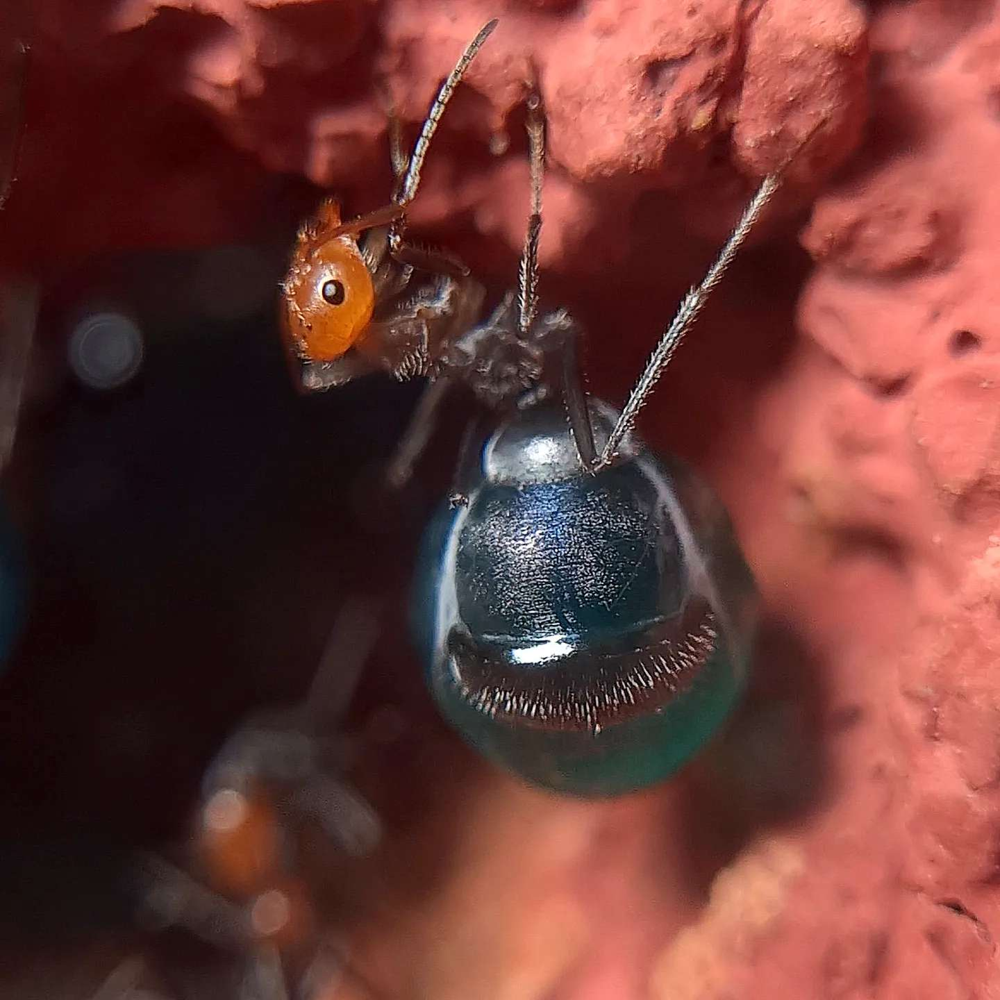

Mon histoire
Bonjour, je me nomme COGNET Matthéo. Je suis né le quatorze février 2005 à Montluçon et suis titulaire du permis B ainsi que du diplôme des gestes de premier secours. Je suis auvergnat, originaire d’un petit village nommé Audes, ce dernier se situe dans l’Allier. J’ai grandi à la campagne avec mes parents. Mon expérience dans la vie m’a appris de nombreuses valeurs telles que la générosité, l’assiduité, la politesse et le respect des personnes. Tout cela s’accorde parfaitement avec mon côté extraverti et ma créativité. Je n’hésite pas à communiquer avec les gens et faire la part des choses par mon sérieux dans le travail, je suis particulièrement affectueux et créatif mais certains petits trucs peuvent m’irriter facilement. Beaucoup de choses attirent mon intérêt dans la vie, je suis passionné par l’escalade et la forge. J’ai découvert la forge lors de ma participation en tant que bénévole pour un festival médiéval, un forgeron m’a appris à forger un couteau. J’ai appris à jouer aux échecs durant 6 ans et j’ai pu participer à de nombreux tournois. Le dessin est l’une de mes passions qui se lie à ma créativité. La guitare électrique est arrivée récemment à la suite d’une passion pour le métal industriel. Je me suis épris d’un grand intérêt pour l’élevage de fourmis, l’étude de leurs comportements semble être un grand sujet d’intérêt pour ma personne. Je suis titulaire du baccalauréat avec mention assez bien. J’ai eu beaucoup de difficulté en mathématiques à la suite du problème d’une classe indiscipliné, les bases de mon année de seconde mon manqué et désormais j’ai beaucoup de mal dans ce domaine. J’ai compensé ses lacunes par l’informatique un domaine dans lequel j’ai très vite compris la logique et qui m’a fortement plus.

